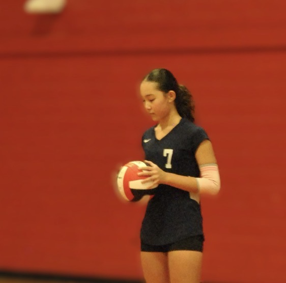
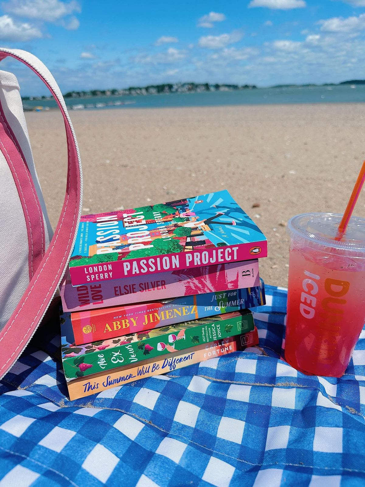

Baking
I love baking because it is fun to try new recipes and sweet treats are so much yummier when I know I made them myself!

I love baking because it is fun to try new recipes and sweet treats are so much yummier when I know I made them myself!
Travelling helps me discover new places and find beauty everywhere. Seeing different countries and cities inspires me!

I've been playing volleyball for 3 years and was team captain for my school this year. It's fun and helps me with teamwork while keeping me active.

I've been swimming for longer than I can remember, whether it be artistic or regular swimming. It's a way for me to challenge and push myself, which I love.

I learned how to crochet about 5 years ago from my aunt and I find that it's a great way to relax (especially with a good TV show or movie!). I enjoy making plushies for myself, family, and friends!

Reading is a fun way for me to escape reality and easily turn a boring time into an interesting one.
